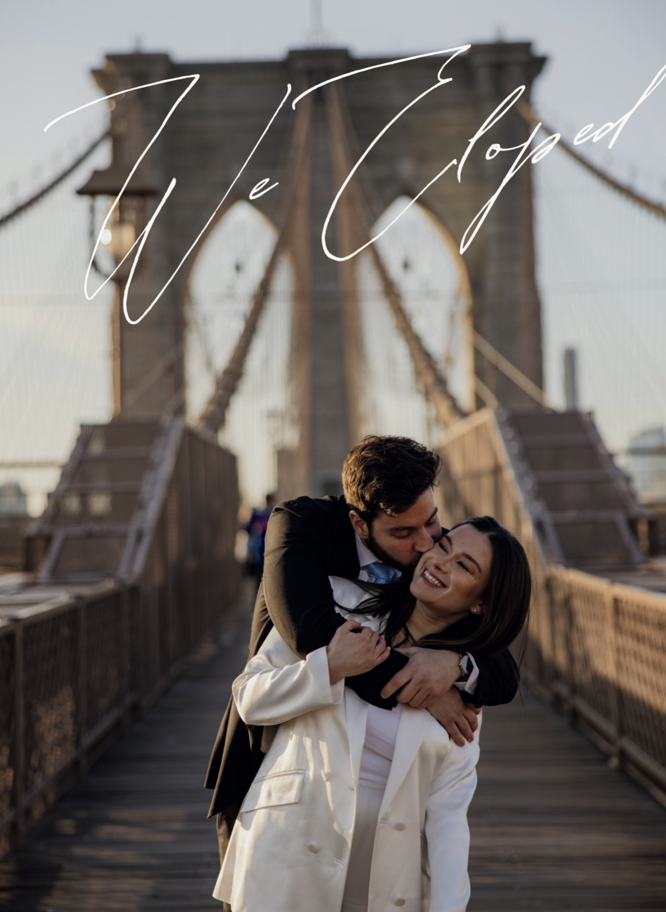

Todd and Marianna's story began in February 2020, when they met in Pittsburgh in the most millennial of ways—on a dating app (Tinder). Their first date at a cozy Mexican restaurant marked the beginning of their destiny to become life partners and cat owners together. From that night on, they've been inseparable—and Marianna's fridge has never fully recovered.
Just a month into their burgeoning basic millennial relationship, the world changed overnight with the arrival of COVID-19. Suddenly, the star-crossed lovers' story took a dramatic turn as they decided to take the next big step—becoming COVID bubble partners, forming a true "quaran-team”.
This decision was critical because, as a resident physician, Marianna battled the pandemic on the front lines, while Todd provided the equally important (and arguably more exhausting) support at home by offering comfort, laughter, and eating all of Marianna's Trader Joe's frozen meals.
Throughout the three years of the pandemic and in the time since, Todd and Marianna have navigated life's twists and turns side by side. Together, they've grieved personal losses, celebrated new friendships, endured a year of long distance while Marianna completed her fellowship, moved in together into a tiny box of an apartment in New York City, changed jobs, and survived some truly questionable haircuts. But perhaps the most important milestone of all? Adopting the greatest cat in the world—Prune. (Our apologies to any pets who might be reading this.)
Through it all, Todd and Marianna have built a life full of joy and adventure. From camping under the stars and dancing at concerts to chasing spring blooms and traveling together to Puerto Rico, Morocco, Croatia, and across the U.S., they've lived, laughed, and loved every step of the way.
Today, their hearts are full of gratitude for the journey they've shared so far—and for their beloved cat, Prune, who somehow chose them to be her people.
Now, as they step into married life, they know there will be challenges ahead. But they also know what brought them here in the first place: being each other's best friend (yeah, we know—gross).
Todd & Marianna